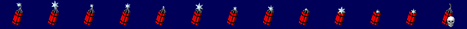

Ivan Bombs¶
As with many other features of Yuri’s Revenge, the settings that control Crazy Ivan Bombs are global so you cannot have multiple variations of them with their own controls. With Ares it is now possible to create new Ivan Bomb-esque weapons – new types of sticky bomb with whatever settings you like.
Ares adds the Death Bombs feature, which was originally planned to be in but were cut from the game before Red Alert 2 was released. Death Bombs can rig victims with bombs that will not detonate automatically, but remain active either until the unit dies to go off then, or the owner manually detonates it, if allowed.
Ares now also supports shrapnel weapons, as long as they have a
CellSpread of 0.5 or more.
New in version 0.1.
Changed in version 3.0.
General Bomb Settings¶
When IvanBomb=yes is set on the weapon’s warhead, the weapon can specify
the following flags in order to customize that bomb:
[Weapon]►IvanBomb.Delay=(integer)- The number of frames that will elapse before a time bomb detonates
automatically. Defaults to
[CombatDamage]►IvanTimedDelay. [Weapon]►IvanBomb.Warhead=(Warhead)- The warhead that will be used when the bomb detonates. Defaults to
[CombatDamage]►IvanWarhead. [Weapon]►IvanBomb.Damage=(integer)- The damage that will be dealt when the bomb detonates. Defaults to
[CombatDamage]►IvanDamage. [Weapon]►IvanBomb.AttachSound=(sound name)- The sound that will be played when the bomb is attached to a target. Defaults
to
[AudioVisual]►BombAttachSound. [Weapon]►IvanBomb.TickingSound=(sound name)- The sound that will be played whilst the bomb is attached to a unit. In order
for this sound to loop correctly, the sound must have
Control=loopset in its INI section insoundmd.ini. Defaults to[AudioVisual]►BombTickingSound.
Bomb Behavior¶
[Weapon]►IvanBomb.DeathBomb=(boolean)- Whether this bomb will be a death bomb instead of a timed bomb when planted on enemy objects. Defaults to no.
[Weapon]►IvanBomb.DeathBombOnAllies=(boolean)- Whether this bomb will be a death bomb instead of a timed bomb when planted on allied objects. Defaults to no.
[Weapon]►IvanBomb.CanDetonateTimeBomb=(boolean)- Whether or not players can manually detonate time bombs attached by this
weapon. Defaults to
[CombatDamage]►CanDetonateTimeBomb. [Weapon]►IvanBomb.CanDetonateDeathBomb=(boolean)- Whether or not players can manually detonate death bombs attached by this
weapon. Defaults to
[CombatDamage]►CanDetonateDeathBomb. [Weapon]►IvanBomb.DetonateOnSell=(boolean)- Whether attached bombs shall explode if the victim is sold. Otherwise, the bomb will just be disarmed. Defaults to yes.
[Weapon]►IvanBomb.Detachable=(boolean)- Whether or not Engineers can remove this bomb from units it has been attached to. Defaults to yes.
[Weapon]►IvanBomb.DestroysBridges=(boolean)Whether or not this bomb can be used on Bridge Repair Huts in order to destroy the corresponding bridge. Defaults to yes.
Note
Bombs can always be attached to Bridge Repair Huts, but the resulting explosion will not destroy the bridge unless
IvanBomb.DestroysBridges=yesis set.
Bomb Overlay Image¶
A bomb overlay image file has to contain zero or more blocks (each consisting of two frames) of flickering images for time bombs, followed by a single, optional frame used as image for Death Bombs.
The image file used for only Death Bombs thus might contain a single frame only, while the image file used only for time bombs are allowed to contain the flickering image blocks only and omit the last frame. If a bomb might be both, the image file has to contain images for both bomb types.
The original bombcurs.shp contains thirteen frames: six blocks of
flickering images at the beginning, followed by one image at the end for the
Death Bomb that was planned but cut from Red Alert 2.
Death Bombs will always display their only frame while for time bombs the
animation defined by the flickering image blocks is stretched to play over the
entire lifetime of the bomb defined by IvanBomb.Delay.
[Weapon]►IvanBomb.Image=(filename, *excluding*the .shp extension)- The SHP file for the image to display over a unit that has a bomb attached to
them, in the format “filename”(the ”.shp” extension is automatically added by
the engine). If the image cannot be loaded then the game will fall back to the
default
bombcurs.shp. [Weapon]►IvanBomb.FlickerRate=(integer)The number of frames at which the bomb image will alternate between the two flickering images in a block to give the impression of a flickering fuse. If 0, flickering is disabled. Defaults to
[CombatDamage]►IvanIconFlickerRate.IvanBomb.FlickerRate=5means the first frame is shown 5 frames, then the second one for 5 frames, then the first one again for 5 more frames, ....If flickering is disabled, all images in all blocks are played over the lifetime of the bomb. The second frame of each block is not ignored and it thus is not necessary to add an empty frame to fill up a block. Still, the logic only deals in full flickering image blocks and will ignore the last frame if the number of frames in the file is odd.
Note
The logic works best if IvanBomb.Delay is a multiple of the
number of flickering image blocks and IvanBomb.FlickerRate. Then each
frame is played smoothly for the same amount of time.